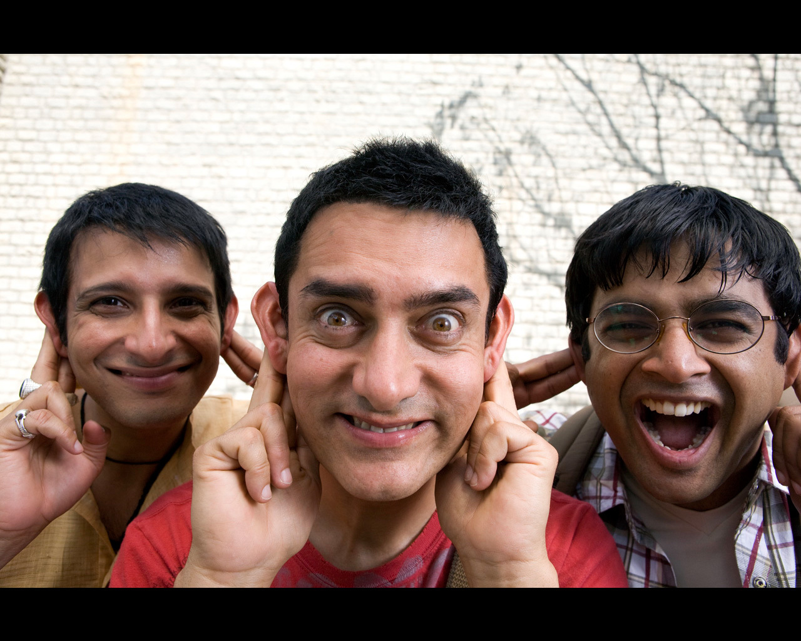
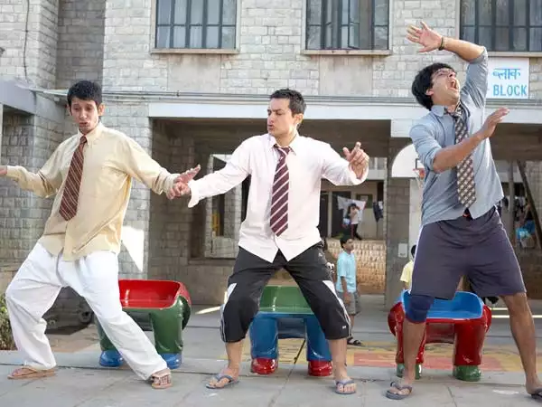

Two friends are searching for their long lost companion. They revisit their college days and recall the memories of their friend who inspired them to think differently, even as the rest of the world called them "idiots".
Rancho is an engineering student. His two friends. Farhan and Raju, Rancho sees the world in a different way. Rancho goes somewhere one day. And his friends find him. When Rancho is found, he has become one of a great scientist in the world.
3 Idiots is a Bollywood production that flashes back and forth between present day, and the characters' time in college. It starts off with old friends, Qureshi and Raju Rastogi learning that their college pal, Rancho, had finally been found. The movie follows their travels to find their long lost friend, while flashing back to the events of their school years, where they often got into amusing shenanigans involving the Dean of Delhi's Imperial College of Engineering, Viru Sahastrabudhe, and dealt with some serious events that many people encounter in every day life.
Farhan and Raju find from their biggest college rival Chatur that their missing friend Ranchoddas (Rancho) has been traced.The trio start their journey to find him where flashback revels Rancho,Raju and Farhan were engineering students and Rancho always believed that a person should be capable rather then being a bookworm and it will be way to success.He always got in tiff with Chatur and college director Viru Sahastrabuddhe (Virus) but fell in love with his daughter Pia.Things were going fine for them as they also cleared their first year exams in present day they reach house of Rancho where they find his father has passed away and the person who claims to be Rancho is someone else.
When the trio find out that where is rancho? They immediately rush to his house. But got shocked after seeing it's not the one who they are expecting it's someone else. The real Rancho. The trio threatened him to tell where is their friend. Finally they found rancho(Amir Khan). And he was living in a lakeside. Being a teacher. Pia runs to him and kissed him and confessed her love. And then then raju and faran also reach there. The hug each other. Then pia ask him his real name. He reply's "phunsukh wangdoo" the greatest scientist whom chatur is searching desperately. Chatur also reach there and he tells that he is the winner of the bet so he deserves the pen which given to Rancho by Virus. When he was about to go Rancho (phunsukh wangdoo) calls chatur and he realized that who is Rancho. So he except that he (Rancho) is the winner. After they lived happily ever after. " Study is not always about success or fame. It's about knowledge. "
Farhan Qureshi (R. Madhavan), Raju Rastogi (Sharman Joshi), and Rancchoddas "Rancho" Shyamaldas Chanchad (Aamir Khan) are three engineering students who share a room in a hostel at the Imperial College of Engineering, one of the best colleges in India. While Farhan and Raju are average students from modest backgrounds, Rancho is from a rich family. Farhan wants to become a wildlife photographer, but has joined engineering college to fulfil his father's wish. Raju on the other hand wants to uplift his family fortunes. Rancho is a wealthy genius who studies for the sheer joy of it. However, Rancho's passion is for knowledge and taking apart and building machines rather than the conventional obsession of the other students with exam ranks. With his different approach Rancho incurs the wrath of dean of college, Professor Viru Sahastrabudhhe (ViruS) (Boman Irani). Rancho irritates his lecturers by giving creative and unorthodox answers, and confronts ViruS after fellow student Joy Lobo hangs himself in his dormitory room. Joy had requested an extension on his major project on compassionate groundshis father had suffered a strokebut ViruS refused, saying that he himself was completely unmoved by his own son's accidental death after being hit by a train. Rancho denounces the rat race, dog-eat-dog, mindless rote learning mentality of the institution, blaming it for Lobo's death.
Threatened by Rancho's talent and free spirit, ViruS labels him an "idiot" and attempts on a number of occasions to destroy his friendship with Farhan and Raju, warning them and their parents to steer clear of Rancho. In contrast, ViruS model student is Chatur Ramalingam or "Silencer", (Omi Vaidya) who sees a high rank at the prestigious college as his ticket to higher social status, corporate power, and therefore wealth. Chatur conforms to the expectations of the system. Rancho humiliates Chatur, who is awarded the honour of making a speech at an award ceremony, by substituting obscenities into the text, which has been written by the librarian. As expected, Chatur mindlessly memorises the speech, without noticing that anything is amiss, partly aided by his lack of knowledge on Hindi. His speech becomes the laughing stock of the audience, infuriating the authorities in the process
Meanwhile, Rancho also falls in love with ViruS' medical student daughter Pia (Kareena Kapoor) when he, Raju and Farhan crash her sister's wedding banquet in order to get a free meal, in the process further infuriating ViruS.
Meanwhile, the three students continue to anger ViruS, although Rancho continues to come first in every exam, while Chatur is always second, and Farhan and Raju are inevitably in the last two positions. The tensions come to a head when the three friends, who are already drunk, break into ViruS's house at night to allow Rancho to propose to Pia, and then urinate on a door inside the compound before running away when ViruS senses intruders. The next day, ViruS threatens to expel Raju lest he talks on the other two. Unable to choose between betraying his friend or letting down his family, Raju jumps out of the 3rd floor window and lands on a courtyard, but after extensive care from Pia and his roommates, awakes from a coma.
The experience has changed Farhan and Raju, and they adopt Rancho's outlook. Farhan decides to pursue his love of photography, while Raju takes an unexpected approach for an interview for a corporate job. He attends in plaster and a wheelchair and gives a series of non-conformal and frank answers. However, ViruS is unsympathetic and vows to make the final exam as hard as possible so that Raju is unable to graduate. Pia hears him and angrily confronts him, and when ViruS gives the same ruthless reply he gives to his students, she denounces him in the same way that Rancho did over the suicide of Lobo. Pia reveals that Viru's son and her brother was not killed in an accident but committed suicide in front of a train and left a letter because ViruS had forced him to pursue a career in engineering over his love for literature; ViruS always mentioned that he unsympathetically failed his son on the ICE entrance exams over and over to every new intake of ICE students. After this, Pia walks out on the family home, and takes ViruS's spare keys with her. She tells Rancho of the exam, and he and Farhan break into ViruS's office and steals the exam and give it to Raju, who with his new-found attitude, is unconcerned with the prospect of failing, and refuses to cheat and throws the paper away. However, ViruS catches the trio and expels them on the spot. However, they earn a reprieve when Viru's pregnant elder daughter Mona (Mona Singh) goes into labour at the same time. A heavy storm cuts all power and traffic, and Pia is still in self-imposed exile, so she instructs Rancho to deliver the baby in the college common room via VOIP, after Rancho restores power using car batteries and a power inverter that Rancho had dreamed up and ViruS had mocked. Rancho then delivers the baby with the help of a cobbled-together Vacuum extractor.
After the baby is apparently stillborn, Rancho resuscitates it. ViruS reconciles with Rancho and his friends and allows them to take their final exams and they graduate. Rancho comes first and is awarded ViruS's pen, which the professor had been keeping for decades before finding a brilliant enough student to gift it to.
Their story is framed as intermittent flashbacks from the present day, ten years after Chatur vowed revenge on Rancho for embarrassing him at the speech night and promised to become more successful than Rancho a decade later. Having lost contact with Rancho, who disappeared during the graduation party and went into seclusion, Raju and Farhan begin a journey to find him. They are joined by Chatur, now a wealthy and successful businessman, who joins them, brazenly confident that he has surpassed Rancho. Chatur is also looking to seal a deal with a famous scientist and prospective business associate named Phunsukh Wangdu. Chatur sees Wangdu, who has hundreds of patents, as his ticket to further social prestige. When they find Rancho's house, they walk into his father's funeral, and find a completely different Rancho Jaaved Jaffrey. After accusing the new man of stealing their friend's identity and profiting from his intellect, the host pulls a gun on them, but Farhan and Raju turn the tables by seizing the father's ashes and threatening to flush them down the toilet. The householder capitulates and says that their friend was a destitute servant boy who loved learning, while he, the real Rancho, was a lazy wealthy child who disliked study, so the family agreed to let the servant boy study in Rancho's place instead of labouring. In return, the real Rancho would pocket the qualifications and the benefits thereof, while the impersonator would sever all contact with the world and start a new life. The real Rancho reveals that his impersonator is now a schoolteacher in Ladakh.
Raju and Farhan then find Pia, and take her from her wedding day to Suhas by performing the same tricks with his material possessions, and having Raju turn up to the ceremony disguised as the groom and eloping with Pia in public. When they arrive in Ladakh, they see a group of enthusiastic Ladakhi children who are motivated by love of knowledge. Pia and the fake Rancho rekindle their love, while Chatur mocks and abuses Rancho the schoolteacher before walking away. When his friends ask what his real name is, he reveals that it Phunsukh Wangdu and phones Chatur, who has turned his back, to turn around and meet his prospective business partner. Chatur is horrified and falls to his knees, accepts his defeat and continues to plead his case with Phunsukh to establish the business relationship he was after.`
|  | |
 |